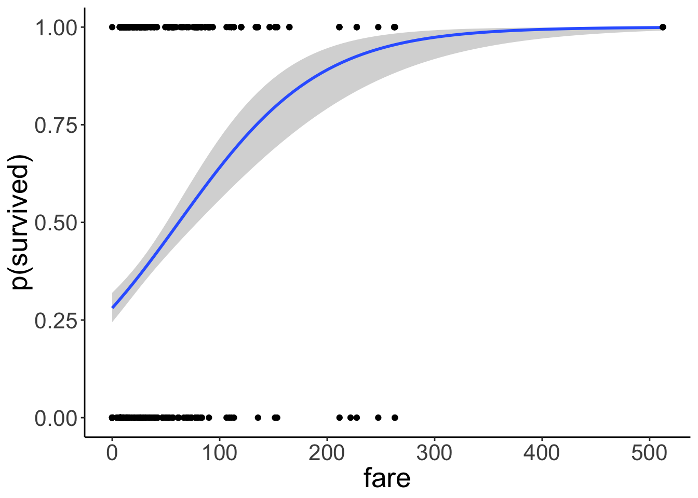
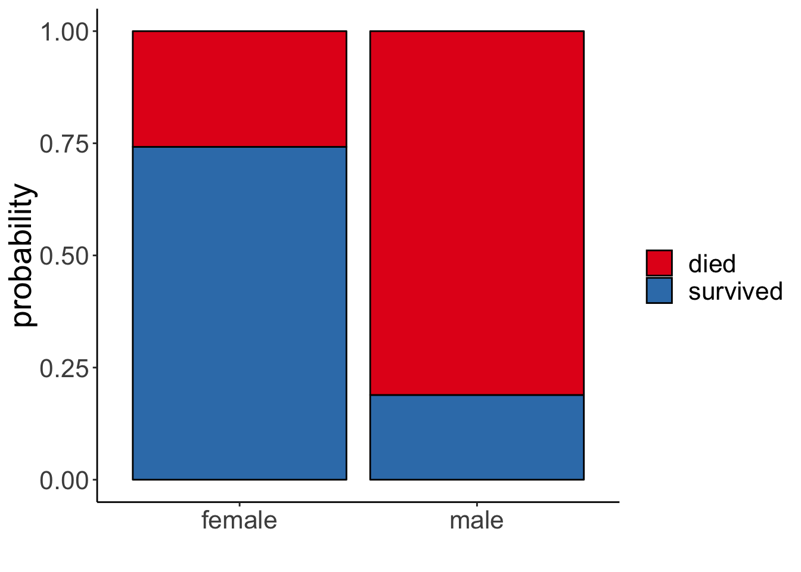

Chapter 20 Generalized linear model
20.1 Load packages and set plotting theme
library("knitr") # for knitting RMarkdown
library("titanic") # titanic dataset
library("kableExtra") # for making nice tables
library("janitor") # for cleaning column names
library("broom") # for tidying up linear models
library("lme4") # for linear mixed effects models
library("boot") # for bootstrapping (also has an inverse logit function)
library("effects") # for showing effects in linear, generalized linear, and other models
library("tidyverse") # for wrangling, plotting, etc.
opts_chunk$set(
comment = "",
results = "hold",
fig.show = "hold"
)theme_set(
theme_classic() + #set the theme
theme(text = element_text(size = 20)) #set the default text size
)20.2 Load data set
df.titanic = titanic_train %>%
clean_names() %>%
mutate(sex = as.factor(sex))Let’s take a quick look at the data:
df.titanic %>% glimpse()Observations: 891
Variables: 12
$ passenger_id <int> 1, 2, 3, 4, 5, 6, 7, 8, 9, 10, 11, 12, 13, 14, 15, …
$ survived <int> 0, 1, 1, 1, 0, 0, 0, 0, 1, 1, 1, 1, 0, 0, 0, 1, 0, …
$ pclass <int> 3, 1, 3, 1, 3, 3, 1, 3, 3, 2, 3, 1, 3, 3, 3, 2, 3, …
$ name <chr> "Braund, Mr. Owen Harris", "Cumings, Mrs. John Brad…
$ sex <fct> male, female, female, female, male, male, male, mal…
$ age <dbl> 22, 38, 26, 35, 35, NA, 54, 2, 27, 14, 4, 58, 20, 3…
$ sib_sp <int> 1, 1, 0, 1, 0, 0, 0, 3, 0, 1, 1, 0, 0, 1, 0, 0, 4, …
$ parch <int> 0, 0, 0, 0, 0, 0, 0, 1, 2, 0, 1, 0, 0, 5, 0, 0, 1, …
$ ticket <chr> "A/5 21171", "PC 17599", "STON/O2. 3101282", "11380…
$ fare <dbl> 7.2500, 71.2833, 7.9250, 53.1000, 8.0500, 8.4583, 5…
$ cabin <chr> "", "C85", "", "C123", "", "", "E46", "", "", "", "…
$ embarked <chr> "S", "C", "S", "S", "S", "Q", "S", "S", "S", "C", "…# Table of the first 10 entries
df.titanic %>%
head(10) %>%
kable(digits = 2) %>%
kable_styling(bootstrap_options = "striped",
full_width = F)| passenger_id | survived | pclass | name | sex | age | sib_sp | parch | ticket | fare | cabin | embarked |
|---|---|---|---|---|---|---|---|---|---|---|---|
| 1 | 0 | 3 | Braund, Mr. Owen Harris | male | 22 | 1 | 0 | A/5 21171 | 7.25 | S | |
| 2 | 1 | 1 | Cumings, Mrs. John Bradley (Florence Briggs Thayer) | female | 38 | 1 | 0 | PC 17599 | 71.28 | C85 | C |
| 3 | 1 | 3 | Heikkinen, Miss. Laina | female | 26 | 0 | 0 | STON/O2. 3101282 | 7.92 | S | |
| 4 | 1 | 1 | Futrelle, Mrs. Jacques Heath (Lily May Peel) | female | 35 | 1 | 0 | 113803 | 53.10 | C123 | S |
| 5 | 0 | 3 | Allen, Mr. William Henry | male | 35 | 0 | 0 | 373450 | 8.05 | S | |
| 6 | 0 | 3 | Moran, Mr. James | male | NA | 0 | 0 | 330877 | 8.46 | Q | |
| 7 | 0 | 1 | McCarthy, Mr. Timothy J | male | 54 | 0 | 0 | 17463 | 51.86 | E46 | S |
| 8 | 0 | 3 | Palsson, Master. Gosta Leonard | male | 2 | 3 | 1 | 349909 | 21.07 | S | |
| 9 | 1 | 3 | Johnson, Mrs. Oscar W (Elisabeth Vilhelmina Berg) | female | 27 | 0 | 2 | 347742 | 11.13 | S | |
| 10 | 1 | 2 | Nasser, Mrs. Nicholas (Adele Achem) | female | 14 | 1 | 0 | 237736 | 30.07 | C |
20.3 Logistic regression
Let’s see if we can predict whether or not a passenger survived based on the price of their ticket.
Let’s run a simple regression first:
# fit a linear model
fit.lm = lm(formula = survived ~ 1 + fare,
data = df.titanic)
# summarize the results
fit.lm %>% summary()
Call:
lm(formula = survived ~ 1 + fare, data = df.titanic)
Residuals:
Min 1Q Median 3Q Max
-0.9653 -0.3391 -0.3222 0.6044 0.6973
Coefficients:
Estimate Std. Error t value Pr(>|t|)
(Intercept) 0.3026994 0.0187849 16.114 < 2e-16 ***
fare 0.0025195 0.0003174 7.939 6.12e-15 ***
---
Signif. codes: 0 '***' 0.001 '**' 0.01 '*' 0.05 '.' 0.1 ' ' 1
Residual standard error: 0.4705 on 889 degrees of freedom
Multiple R-squared: 0.06621, Adjusted R-squared: 0.06516
F-statistic: 63.03 on 1 and 889 DF, p-value: 6.12e-15Look’s like fare is a significant predictor of whether or not a person survived. Let’s visualize the model’s predictions:
ggplot(data = df.titanic,
mapping = aes(x = fare,
y = survived)) +
geom_smooth(method = "lm") +
geom_point() +
labs(y = "survived")
This doesn’t look good! The model predicts intermediate values of survived (which doesn’t make sense given that a person either survived or didn’t survive). Furthermore, the model predicts values greater than 1 for fares greather than ~ 300.
Let’s run a logistic regression instead.
# fit a logistic regression
fit.glm = glm(formula = survived ~ 1 + fare,
family = "binomial",
data = df.titanic)
fit.glm %>% summary()
Call:
glm(formula = survived ~ 1 + fare, family = "binomial", data = df.titanic)
Deviance Residuals:
Min 1Q Median 3Q Max
-2.4906 -0.8878 -0.8531 1.3429 1.5942
Coefficients:
Estimate Std. Error z value Pr(>|z|)
(Intercept) -0.941330 0.095129 -9.895 < 2e-16 ***
fare 0.015197 0.002232 6.810 9.79e-12 ***
---
Signif. codes: 0 '***' 0.001 '**' 0.01 '*' 0.05 '.' 0.1 ' ' 1
(Dispersion parameter for binomial family taken to be 1)
Null deviance: 1186.7 on 890 degrees of freedom
Residual deviance: 1117.6 on 889 degrees of freedom
AIC: 1121.6
Number of Fisher Scoring iterations: 4And let’s visualize the predictions of the logistic regression:
ggplot(data = df.titanic,
mapping = aes(x = fare,
y = survived)) +
geom_smooth(method = "glm",
method.args = list(family = "binomial")) +
geom_point() +
labs(y = "p(survived)")
Much better! Note that we’ve changed the interpretation of our dependent variable. We are now predicting the probability that a person survived based on their fare. The model now only predicts values between 0 and 1. To achieve this, we apply a logit transform to the outcome variable like so:
\[ \ln(\frac{\pi_i}{1-\pi_i}) = b_0 + b_1 \cdot X_i + e_i \] where \(\pi_i\) is the probability of passenger \(i\) having survived. Importantly, this affects our interpretation of the model parameters. They are now defined in log-odds, and can apply an inverse logit transformation to turn this back into a probability:
With
\[ \pi = P(Y = 1) \] and the logit transformation
\[ \ln(\frac{\pi}{1-\pi}) = V, \] where \(V\) is just a placeholder for our linear model formula, we can go back to \(\pi\) through the inverse logit transformation like so:
\[
\pi = \frac{e^V}{1 + e^V}
\]
In R, we can use log(x) to calculate the natural logarithm \(\ln(x)\), and exp(x) to calculate e^x.
20.3.1 Interpreting the parameters
fit.glm %>% summary()
Call:
glm(formula = survived ~ 1 + fare, family = "binomial", data = df.titanic)
Deviance Residuals:
Min 1Q Median 3Q Max
-2.4906 -0.8878 -0.8531 1.3429 1.5942
Coefficients:
Estimate Std. Error z value Pr(>|z|)
(Intercept) -0.941330 0.095129 -9.895 < 2e-16 ***
fare 0.015197 0.002232 6.810 9.79e-12 ***
---
Signif. codes: 0 '***' 0.001 '**' 0.01 '*' 0.05 '.' 0.1 ' ' 1
(Dispersion parameter for binomial family taken to be 1)
Null deviance: 1186.7 on 890 degrees of freedom
Residual deviance: 1117.6 on 889 degrees of freedom
AIC: 1121.6
Number of Fisher Scoring iterations: 4The estimate for the intercept and fare are in log-odds. We apply the inverse logit transformation to turn these into probabilities:
fit.glm$coefficients[1] %>% inv.logit()(Intercept)
0.2806318 Here, we see that the intercept is \(p = 0.28\). That is, the predicted chance of survival for someone who didn’t pay any fare at all is 28% according to the model. Interpreting the slope is a little more tricky. Let’s look at a situation first where we have a binary predictor.
20.3.1.1 Binary predictor
Let’s see whether the probability of survival differed between male and female passengers.
fit.glm2 = glm(formula = survived ~ sex,
family = "binomial",
data = df.titanic)
fit.glm2 %>% summary()
Call:
glm(formula = survived ~ sex, family = "binomial", data = df.titanic)
Deviance Residuals:
Min 1Q Median 3Q Max
-1.6462 -0.6471 -0.6471 0.7725 1.8256
Coefficients:
Estimate Std. Error z value Pr(>|z|)
(Intercept) 1.0566 0.1290 8.191 2.58e-16 ***
sexmale -2.5137 0.1672 -15.036 < 2e-16 ***
---
Signif. codes: 0 '***' 0.001 '**' 0.01 '*' 0.05 '.' 0.1 ' ' 1
(Dispersion parameter for binomial family taken to be 1)
Null deviance: 1186.7 on 890 degrees of freedom
Residual deviance: 917.8 on 889 degrees of freedom
AIC: 921.8
Number of Fisher Scoring iterations: 4It looks like it did! Let’s visualize:
df.titanic %>%
mutate(survived = factor(survived, labels = c("died", "survived"))) %>%
ggplot(data = .,
mapping = aes(x = sex,
fill = survived)) +
geom_bar(position = "fill",
color = "black") +
scale_fill_brewer(palette = "Set1") +
labs(x = "", fill = "", y = "probability")
And let’s interpret the parameters by applying the inverse logit transform. To get the prediction for female passengers we get
\[ \widehat{\ln(\frac{\pi_i}{1-\pi_i})} = b_0 + b_1 \cdot \text{sex}_i = b_0 + b_1 \cdot 0 = b_0 \]
since we dummy coded the predictor and female is our reference category. To get the predicted probability of surival for women we do the logit transform:
\[ \pi = \frac{e^{b_0}}{1 + e^{b_0}} \] The predicted probability is:
fit.glm2$coefficients[1] %>% inv.logit()(Intercept)
0.7420382 To get the prediction for male passengers we have:
\[ \widehat{\ln(\frac{\pi_i}{1-\pi_i})} = b_0 + b_1 \cdot \text{sex}_i = b_0 + b_1 \cdot 1 = b_0 + b_1 \] Applying the logit transform like so
\[ \pi = \frac{e^{b_0 + b_1}}{1 + e^{b_0 + b_1}} \]
The predicted probability of male passengers surviving is:
sum(fit.glm2$coefficients) %>% inv.logit()[1] 0.1889081Here is the same information in a table:
df.titanic %>%
count(sex, survived) %>%
mutate(p = n/sum(n)) %>%
group_by(sex) %>%
mutate(`p(survived|sex)` = p/sum(p)) %>%
head(10) %>%
kable(digits = 2) %>%
kable_styling(bootstrap_options = "striped",
full_width = F)| sex | survived | n | p | p(survived|sex) |
|---|---|---|---|---|
| female | 0 | 81 | 0.09 | 0.26 |
| female | 1 | 233 | 0.26 | 0.74 |
| male | 0 | 468 | 0.53 | 0.81 |
| male | 1 | 109 | 0.12 | 0.19 |
20.3.1.2 Continuous predictor
To interpret the predictions when a continuous predictor is invovled, it’s easiest to consider a few concrete cases. Here, I use the augment() function from the “broom” package to get the model’s predictions for some values of interest:
fit.glm %>%
augment(newdata = tibble(fare = c(0, 10, 50, 100, 500))) %>%
clean_names() %>%
select(fare, prediction = fitted) %>%
mutate(`p(survival)` = prediction %>% inv.logit()) %>%
head(10) %>%
kable(digits = 2) %>%
kable_styling(bootstrap_options = "striped",
full_width = F)| fare | prediction | p(survival) |
|---|---|---|
| 0 | -0.94 | 0.28 |
| 10 | -0.79 | 0.31 |
| 50 | -0.18 | 0.45 |
| 100 | 0.58 | 0.64 |
| 500 | 6.66 | 1.00 |
20.3.1.3 Several predictors
Let’s fit a logistic regression that predicts the probability of survival based both on the passenger’s sex and what fare they paid (allowing for an interaction of the two predictors):
fit.glm = glm(formula = survived ~ 1 + sex * fare,
family = "binomial",
data = df.titanic)
fit.glm %>% summary()
Call:
glm(formula = survived ~ 1 + sex * fare, family = "binomial",
data = df.titanic)
Deviance Residuals:
Min 1Q Median 3Q Max
-2.6280 -0.6279 -0.5991 0.8172 1.9288
Coefficients:
Estimate Std. Error z value Pr(>|z|)
(Intercept) 0.408428 0.189999 2.150 0.031584 *
sexmale -2.099345 0.230291 -9.116 < 2e-16 ***
fare 0.019878 0.005372 3.701 0.000215 ***
sexmale:fare -0.011617 0.005934 -1.958 0.050252 .
---
Signif. codes: 0 '***' 0.001 '**' 0.01 '*' 0.05 '.' 0.1 ' ' 1
(Dispersion parameter for binomial family taken to be 1)
Null deviance: 1186.66 on 890 degrees of freedom
Residual deviance: 879.85 on 887 degrees of freedom
AIC: 887.85
Number of Fisher Scoring iterations: 5And let’s visualize the result:
df.titanic %>%
mutate(sex = as.factor(sex)) %>%
ggplot(data = .,
mapping = aes(x = fare,
y = survived,
color = sex,
group = sex)) +
geom_point(alpha = 0.1, size = 2) +
geom_smooth(method = "glm",
method.args = list(family = "binomial"),
alpha = 0.2,
aes(fill = sex)) +
scale_color_brewer(palette = "Set1")
We notice that there is one outlier who was male and paid a $500 fare (or maybe this is a mistake in the data entry?!). Let’s remove this outlier and see what happens:
df.titanic %>%
filter(fare < 500) %>%
mutate(sex = as.factor(sex)) %>%
ggplot(data = .,
mapping = aes(x = fare,
y = survived,
color = sex,
group = sex)) +
geom_point(alpha = 0.1, size = 2) +
geom_smooth(method = "glm",
method.args = list(family = "binomial"),
alpha = 0.2,
aes(fill = sex)) +
scale_color_brewer(palette = "Set1")
There is still a clear difference between female and male passengers, but the prediction for male passengers has changed a bit. Let’s look at a concrete example:
# with the outlier:
# predicted probability of survival for a male passenger who paid $200 for their fare
inv.logit(fit.glm$coefficients[1] + fit.glm$coefficients[2] + fit.glm$coefficients[3] * 200 + fit.glm$coefficients[4] * 200)
# without the outlier:
# predicted probability of survival for a male passenger who paid $200 for their fare
fit.glm_no_outlier = glm(formula = survived ~ 1 + sex * fare,
family = "binomial",
data = df.titanic %>%
filter(fare < 500))
inv.logit(fit.glm_no_outlier$coefficients[1] + fit.glm_no_outlier$coefficients[2] + fit.glm_no_outlier$coefficients[3] * 200 + fit.glm_no_outlier$coefficients[4] * 200) (Intercept)
0.4903402
(Intercept)
0.4658284 With the oulier removed, the predicted probability of survival for a male passenger who paid $200 decreases from 49% to 47%.
20.3.1.4 Using the “effects” package
The “effects” package helps with the interpretation of the results. It applies the inverse logit transform for us, and shows the predictions for a range of cases.
# show effects
allEffects(mod = fit.glm, xlevels = list(fare = c(0, 100, 200, 300, 400, 500))) model: survived ~ 1 + sex * fare
sex*fare effect
fare
sex 0 100 200 300 400 500
female 0.6007108 0.9165428 0.9876799 0.9982941 0.9997660 0.9999679
male 0.1556552 0.2963415 0.4903402 0.6872927 0.8339147 0.9198098I’ve used the xlevels argument to specify for what values of the predictor fare, I’d like get the predicted values.
20.4 Simulate a logistic regression
As always, to better understand a statistical modeling procedure, it’s helpful to simulate data from the assumed data-generating process, fit the model, and see whether we can reconstruct the parameters.
# make example reproducible
set.seed(1)
# set parameters
sample_size = 1000
b0 = 0
b1 = 1
# b1 = 8
# generate data
df.data = tibble(
x = rnorm(n = sample_size),
y = b0 + b1 * x,
p = inv.logit(y)) %>%
mutate(response = rbinom(n(), size = 1, p = p))
# fit model
fit = glm(formula = response ~ 1 + x,
family = "binomial",
data = df.data)
# model summary
fit %>% summary()
Call:
glm(formula = response ~ 1 + x, family = "binomial", data = df.data)
Deviance Residuals:
Min 1Q Median 3Q Max
-2.1137 -1.0118 -0.4591 1.0287 2.2591
Coefficients:
Estimate Std. Error z value Pr(>|z|)
(Intercept) -0.06214 0.06918 -0.898 0.369
x 0.92905 0.07937 11.705 <2e-16 ***
---
Signif. codes: 0 '***' 0.001 '**' 0.01 '*' 0.05 '.' 0.1 ' ' 1
(Dispersion parameter for binomial family taken to be 1)
Null deviance: 1385.4 on 999 degrees of freedom
Residual deviance: 1209.6 on 998 degrees of freedom
AIC: 1213.6
Number of Fisher Scoring iterations: 3Nice! The inferred estimates are very close to the parameter values we used to simulate the data.
Let’s visualize the result:
ggplot(data = df.data,
mapping = aes(x = x,
y = response)) +
geom_smooth(method = "glm",
method.args = list(family = "binomial")) +
geom_point(alpha = 0.1) +
labs(y = "p(response)")
20.4.0.1 Calculate the model’s likelihood
To calculate the likelihood of the data for a given logistic model, we look at the actual response, and the probability of the predicted response, and then determine the likelihood of the observation assuming a bernoulli process. To get the overall likelihood of the data, we then multiply the likelihood of each data point (or take the logs first and then the sum to get the log-likelihood).
This table illustrate the steps involved:
fit %>%
augment() %>%
clean_names() %>%
mutate(p = inv.logit(fitted)) %>%
select(response, p) %>%
mutate(p_response = ifelse(response == 1, p, 1-p),
log_p = log(p_response)) %>%
rename(`p(Y = 1)` = p, `p(Y = response)` = p_response,
`log(p(Y = response))` = log_p) %>%
head(10) %>%
kable(digits = 2) %>%
kable_styling(bootstrap_options = "striped",
full_width = F)| response | p(Y = 1) | p(Y = response) | log(p(Y = response)) |
|---|---|---|---|
| 1 | 0.34 | 0.34 | -1.07 |
| 0 | 0.53 | 0.47 | -0.75 |
| 1 | 0.30 | 0.30 | -1.20 |
| 1 | 0.81 | 0.81 | -0.22 |
| 1 | 0.56 | 0.56 | -0.58 |
| 0 | 0.30 | 0.70 | -0.36 |
| 1 | 0.60 | 0.60 | -0.52 |
| 1 | 0.65 | 0.65 | -0.43 |
| 1 | 0.62 | 0.62 | -0.48 |
| 0 | 0.41 | 0.59 | -0.54 |
Let’s calculate the log-likelihood by hand:
fit %>%
augment() %>%
clean_names() %>%
mutate(p = inv.logit(fitted),
log_likelihood = response * log(p) + (1 - response) * log(1 - p)) %>%
summarize(log_likelihood = sum(log_likelihood))# A tibble: 1 x 1
log_likelihood
<dbl>
1 -605.And compare it with the model summary
fit %>%
glance() %>%
select(logLik, AIC, BIC) %>%
kable(digits = 2) %>%
kable_styling(bootstrap_options = "striped",
full_width = F)| logLik | AIC | BIC |
|---|---|---|
| -604.82 | 1213.64 | 1223.45 |
We’re getting the same result – neat! Now we know how the likelihood of the data is calculated for a logistic regression model.
20.5 Testing hypotheses
To test hypotheses, we use our gold old model comparison approach:
# fit compact model
fit.compact = glm(formula = survived ~ 1 + fare,
family = "binomial",
data = df.titanic)
# fit augmented model
fit.augmented = glm(formula = survived ~ 1 + sex + fare,
family = "binomial",
data = df.titanic)
# likelihood ratio test
anova(fit.compact, fit.augmented, test = "LRT")Analysis of Deviance Table
Model 1: survived ~ 1 + fare
Model 2: survived ~ 1 + sex + fare
Resid. Df Resid. Dev Df Deviance Pr(>Chi)
1 889 1117.57
2 888 884.31 1 233.26 < 2.2e-16 ***
---
Signif. codes: 0 '***' 0.001 '**' 0.01 '*' 0.05 '.' 0.1 ' ' 1Note that in order to get a p-value out of this, we need to specify what statistical test we’d like to run. In this case, we use the likelihood ratio test (“LRT”).
20.6 Logistic mixed effects model
Just like we can build linear mixed effects models using lmer() instead of lm(), we can also build a logistic mixed effects regression using glmer() instead of glm().
Let’s read in some data:
# load bdf data set from nlme package
data(bdf, package = "nlme")
df.language = bdf %>%
clean_names() %>%
filter(repeatgr != 2) %>%
mutate(repeatgr = repeatgr %>% as.character() %>% as.numeric())
rm(bdf)Fit the model, and print out the results:
fit = glmer(repeatgr ~ 1 + ses * minority + (1 | school_nr),
data = df.language,
family = "binomial")Warning in checkConv(attr(opt, "derivs"), opt$par, ctrl =
control$checkConv, : Model failed to converge with max|grad| = 0.00172186
(tol = 0.001, component 1)fit %>% summary()Generalized linear mixed model fit by maximum likelihood (Laplace
Approximation) [glmerMod]
Family: binomial ( logit )
Formula: repeatgr ~ 1 + ses * minority + (1 | school_nr)
Data: df.language
AIC BIC logLik deviance df.resid
1660.9 1689.6 -825.5 1650.9 2278
Scaled residuals:
Min 1Q Median 3Q Max
-0.8943 -0.4062 -0.3151 -0.2233 5.9156
Random effects:
Groups Name Variance Std.Dev.
school_nr (Intercept) 0.2464 0.4964
Number of obs: 2283, groups: school_nr, 131
Fixed effects:
Estimate Std. Error z value Pr(>|z|)
(Intercept) -0.478689 0.206057 -2.323 0.0202 *
ses -0.061214 0.007915 -7.733 1.05e-14 ***
minorityY 0.482829 0.472314 1.022 0.3067
ses:minorityY 0.010820 0.022867 0.473 0.6361
---
Signif. codes: 0 '***' 0.001 '**' 0.01 '*' 0.05 '.' 0.1 ' ' 1
Correlation of Fixed Effects:
(Intr) ses mnrtyY
ses -0.907
minorityY -0.400 0.368
ses:minrtyY 0.298 -0.318 -0.865
convergence code: 0
Model failed to converge with max|grad| = 0.00172186 (tol = 0.001, component 1)